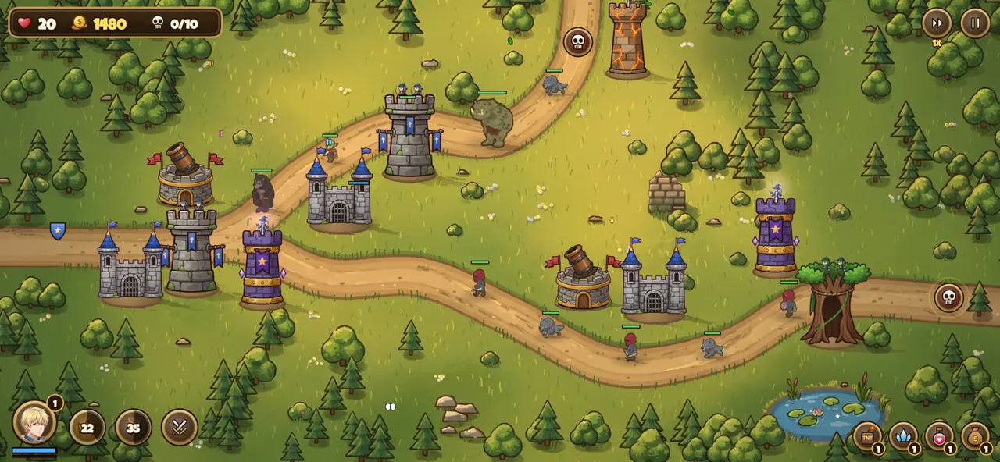
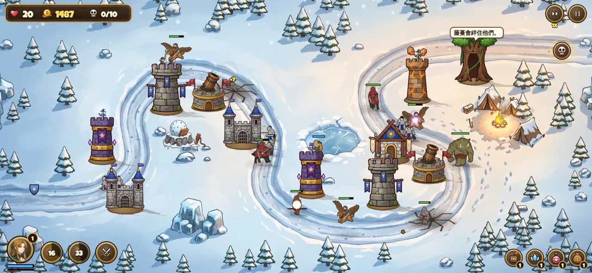
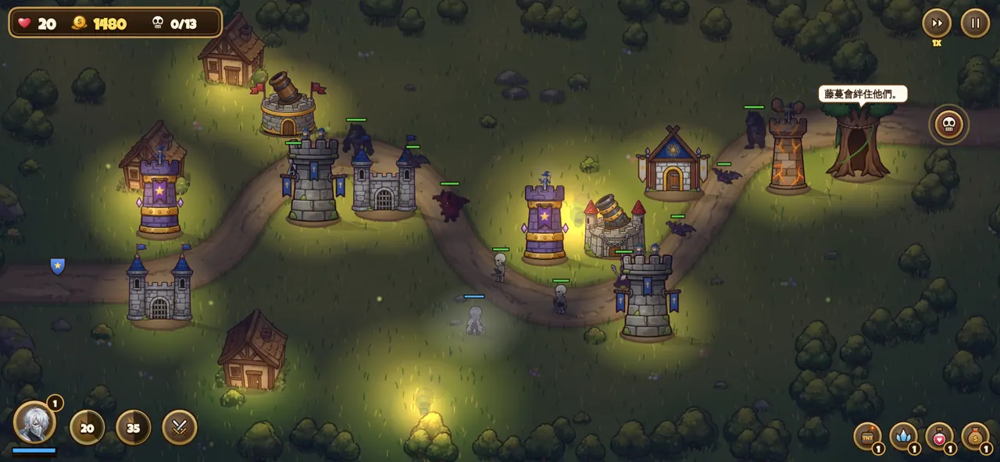
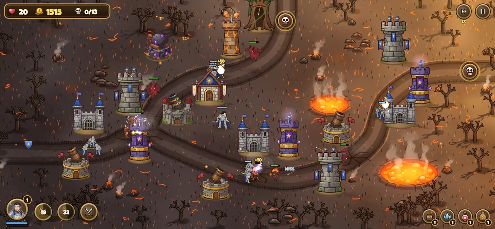
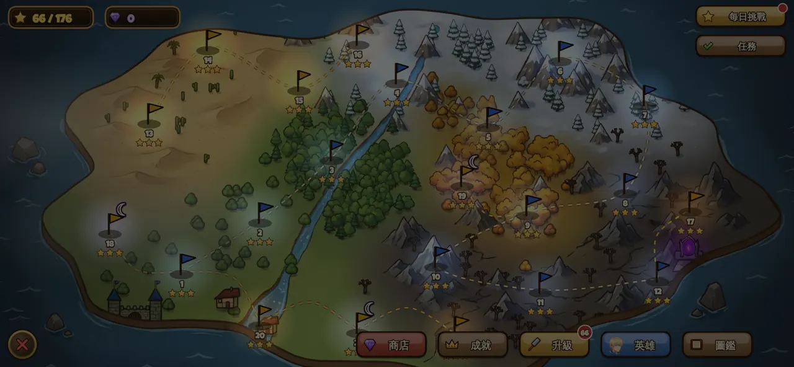
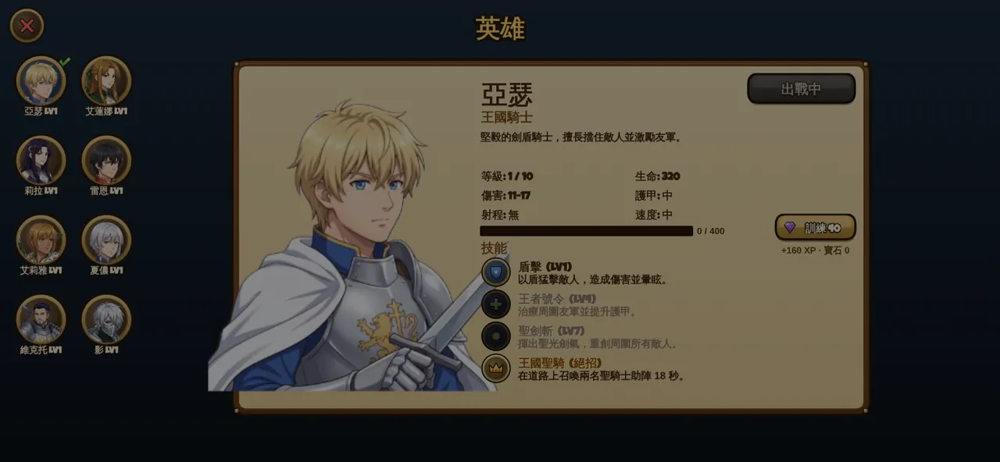

遊戲特色FEATURES
🏰 四種防禦塔，八種特化
弓箭塔、法師塔、兵營、砲塔，各有兩條升級路線。士兵擋路、法術支援，每一關都要想好怎麼擺。
Four towers, each with two specializations.
⚔️ 8 位英雄
騎士、遊俠、法師、刺客、聖職者……每位英雄都有獨特技能與大招，還會一路升級。
Eight heroes with their own skills and ultimates.
🗺️ 22 關與 12 名首領
草原、森林、雪山、荒原、沙漠、火山、海灣，還有月夜突襲；英雄挑戰、鋼鐵挑戰、無盡模式、首領連戰、每日挑戰。
22 levels, 12 bosses, challenges, endless mode and daily puzzles.
✨ 3D 角色・手繪戰場
英雄與怪物用 3D 動作重新演出：獅鷲拍翅、騎兵衝鋒、巨魔掄棍。也可以切回手繪版。
3D animated heroes and monsters on hand-painted battlefields.
遊戲畫面SCREENSHOTS





